Погружной блендер BORK B703
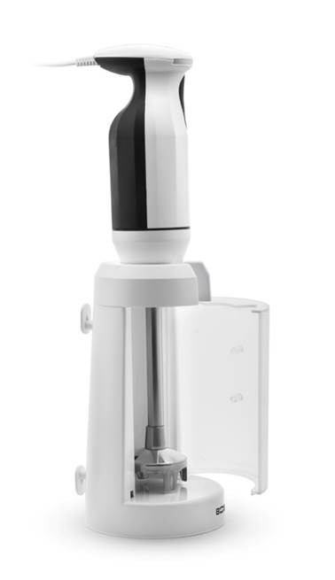 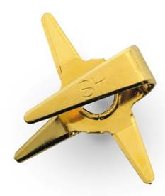- Высокооборотистый двигатель и низкий уровень шума
- Компактное хранение
- Комплект дополнительных насадок
- Удобство эксплуатации
Комплект дополнительных насадок
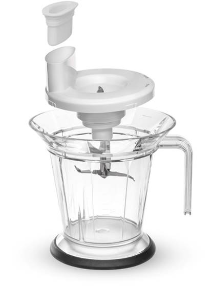 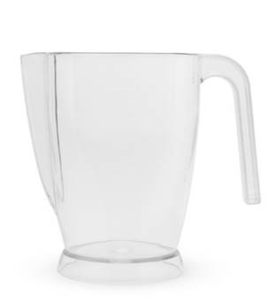 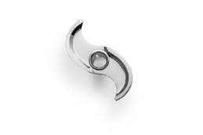 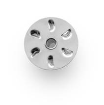 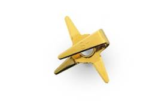 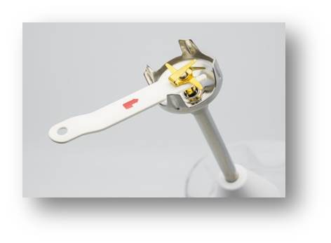Благодаря набору насадок, блендер имеет очень широкий функционал: смешивает, замешивает, режет, колет, взбивает, взбалтывает, делает пюре, эмульсии, мелет, рубит и многое другое.
АС двигатель мощность 170 Ватт
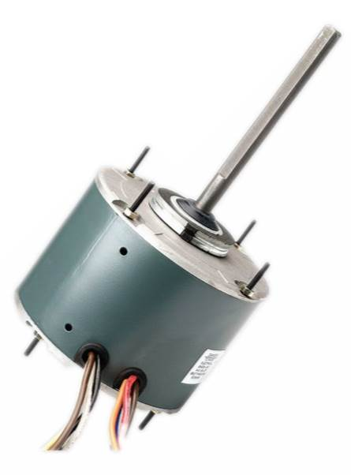Эти двигатели характеризуются высокой надежностью, экономичностью и высокой производительностью. Как следствие, долгим сроком службы.
Сбалансированный двигатель не имеет вибраций даже на самых высоких оборотах, доходящих до 22 000 в минуту, в связи с чем, блендер легко удерживать в руке даже при продолжительной работе. Это позволяет блендеру работать с большими объемами.
Время работы
Рекомендуемое время работы – 1 мин.
Однако блендер прошел проверки на более длительное время работы.
Прибор оснащен температурным датчиком, который отключит питание когда температура мотора превысит 105ºС.
Покрытие универсального ножа из нитрида титана
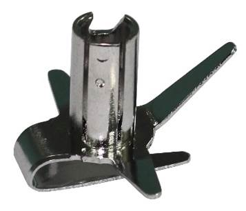 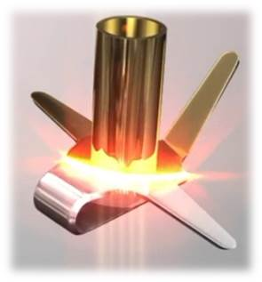 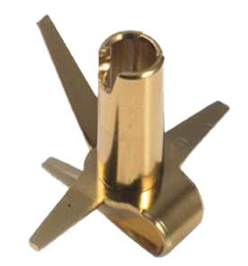Нитрид титана — бинарное химическое соединение титана с азотом.
Нитрид титана — бинарное химическое соединение титана с азотом.
Особенности нержавеющей стали:
- Экологическая чистота используемых материалов
- Устойчивость к окислению при температурах 700-800 °С
- Высокая износостойкость, даже под воздействием жестких частиц природного происхождения
- Устойчивость к агрессивным средам, даже к кипящим кислотам, к примеру: температура кипения серной кислоты 338 °С
- Повышенная стойкость к коррозии: устойчивость в условиях повышенной влажности
Нитрид титана используется для создания износостойких покрытий:
- В медицине при создании эндопротезов (искусственных костей и суставов), зубных протезов, а так-же в медицинских инструментах
- В быту, как стойкое защитное или декоративное покрытие столовых приборов
- В промышленности напыления на: свёрла, резцы, фрезы и другие обрабатывающие инструменты
Стойкость покрытия
Нитрид титана является одним из наиболее изученных и часто используемых тонкопленочных покрытий во всем мире.
С высокой твердостью ~85 HRC и толщиной всего 3 микрона, это покрытие повышает износостойкость режущих кромок, препятствует появлению царапин, а также уменьшает коэффициент трения на поверхности.
Срок эксплуатации в промышленных условиях достигает 50 лет.
Лучшие ножи, сделанные в Японии, в соответствии с многовековыми традициями изготовления холодного оружия, имеют твёрдость 50 - 70 по Роквеллу.
Процесс формирования покрытия происходит в условиях высокого вакуума, что полностью исключает присутствие посторонних примесей.
Нанесения покрытия нитрида титана затратный, сложный, высокотехнологичный, многоступенчатый нано-процесс:
На первом этапе изделие полируется и очищается практически на молекулярном уровне
- Покрытие является композиционным и содержит 2 слоя толщиной до 3,5 микрон
- На втором этапе при температуре 350-450 °С формируется переходной слой из чистого титана
- На третьем этапе формируется основное покрытие. Атомы титана вступают в реакцию с азотом и осаживаются на поверхности изделия
2 в 1: подставка для блендера и бокс хранения для насадок
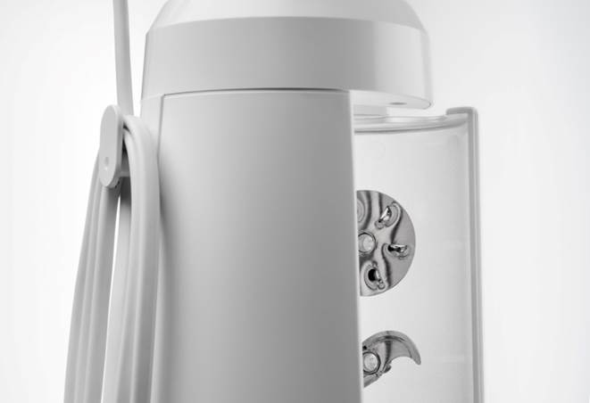Материал рабочей части
Надежная конструкция привода.
Такие блендеры имеют особую конструкцию привода. Металлическая трубка значительно надежней пластиковой (отсутствуют пластиковые соединения). Подшипники плотно и аккуратно посажены на ось.
Вал вращается без отклонений, т.к. подшипники расположены строго параллельно наконечнику.
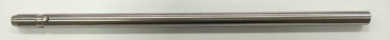SUS 303
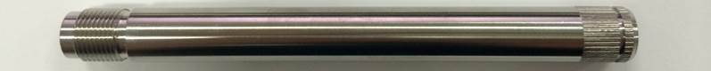SUS 304
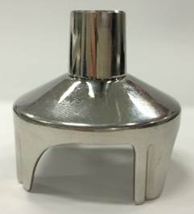Защитный нож – Сталь SUS303
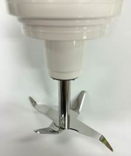Лезвие чаши – Сталь SUS303
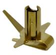Универсальный нож – Сталь SUS304
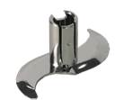Нож для мяса и овощей – Сталь SUS304
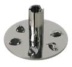Нож – «взбиватель» SUS304
Материал ручки
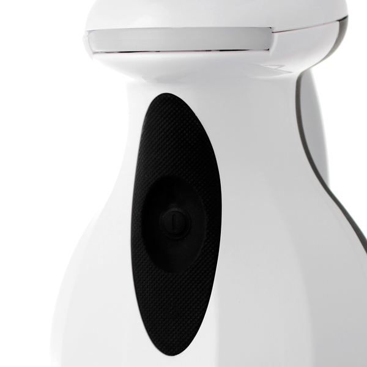Комфорт при эксплуатации.
Эргономичная ручка плотно ложиться в руку, снижая нагрузку на кисть. Материал ручки – ABS пластик.
Мягкое покрытие ручки и прорезиненная кнопка включения.
Данные решения позволяют работать блендером мокрыми руками, что не редко бывает на кухне.
Чаша - измельчитель
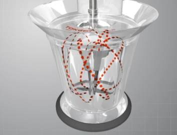Прочная чаша измельчителя из поликарбоната.
Чаша прочная и легкая, не царапается и не окрашивается. Для более эффективного смешивания продуктов внутри чаши сделаны три ребра жесткости.
Длина насадки
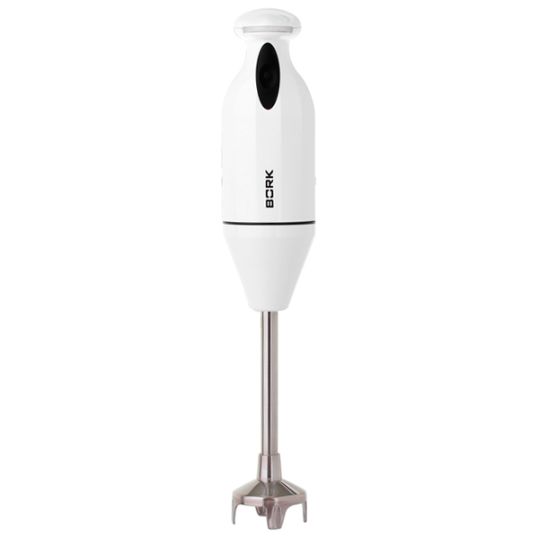К профессиональным характеристикам можно отнести удлиненную ось блендера (от моторной части до насадки). Это позволяет работать блендеру с посудой с высокими бортами.
Характеристики
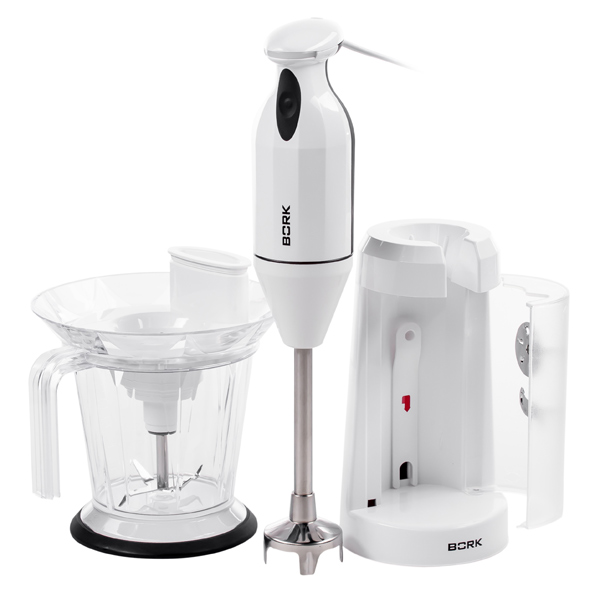
Мощность: 170 Вт
Количество режимов: 1
Количество скоростей: 1
Диапазон оборотов: до 22000 об/мин
Материал корпуса: Сталь/Пластик
Количество насадок: 3
Длинна сетевого шнура: 1,5 м
Цвет: Черно-белый
Габариты: 28x14x27 см
Вес: 3,1 кг
Страна производитель: Корея
Гарантийный срок: 1 год.
Аргументы для продажи
- АС двигатель мощность 170 Ватт.
- Высокое количество оборотов - 22 000 об/мин.
- Комплект дополнительных насадок
- Покрытие основной насадки из нитрида титана.
- 2 в 1: подставка для блендера и бокс хранения для насадок
- Надежная конструкция привода.
- Эргономичная ручка
- Световая индикация работы.
- Мягкое покрытие ручки и прорезиненная кнопка включения.
- Прочная чаша измельчителя из поликарбоната.
- Длинный сетевой шнур 1,5 м.
- Сделано в Корее